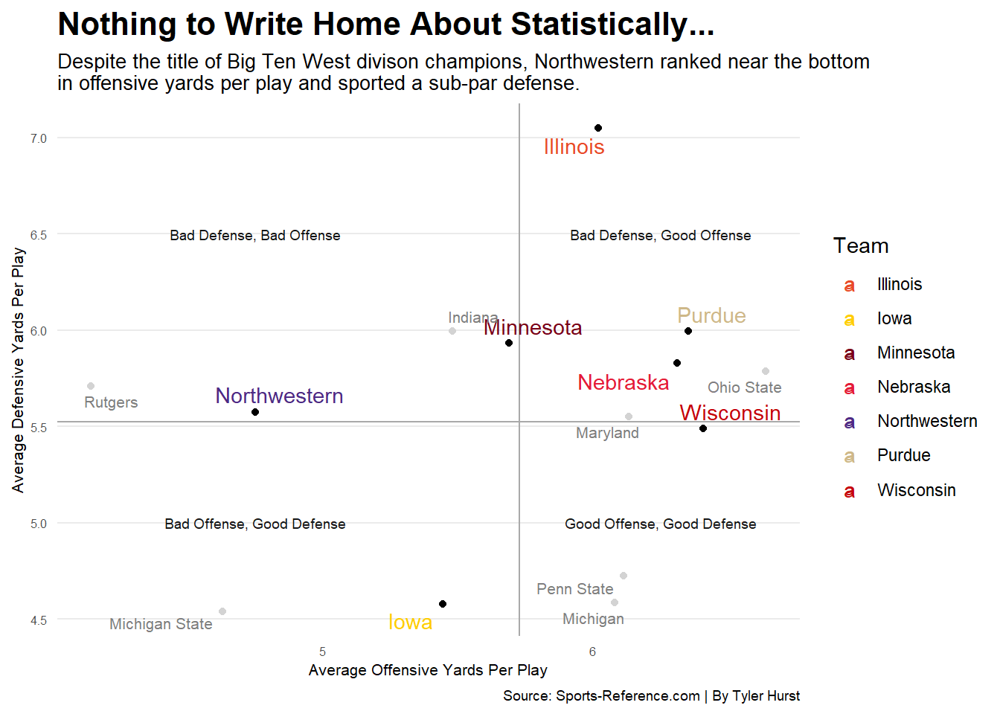

Code
library(tidyverse)
library(ggbump)
library(patchwork)
library(ggrepel)
library(ggalt)
library(ggtext)
BigTenWest18v2 <- read_csv("BigTenWest18v2.csv")
BigTenWest18Ydsv2 <- read_csv("BigTenWest18Ydsv2.csv")
NorthwesternWinScoreDiff <- read_csv("NorthwesternWinScoreDiff.csv")
BigTenWest18Ydsv2 |>
group_by(Team) |>
summarise(
TotalPlays = sum(OffPlays),
TotalYards = sum(OffYds),
DefensivePlays = sum(DefPlays),
DefensiveYards = sum(DefYds)) |>
mutate(
OffensiveYPP = TotalYards/TotalPlays,
DefensiveYPP = DefensiveYards/DefensivePlays) -> ypp
averages <- ypp |> ungroup() |> summarise(AvgOffYardsPer = mean(OffensiveYPP), AvgDefYardsPer = mean(DefensiveYPP))
west_teams <- c("Northwestern", "Illinois", "Iowa", "Minnesota", "Nebraska", "Wisconsin", "Purdue")
west <- ypp |> filter(Team %in% west_teams)
east_teams <- c("Ohio State", "Indiana", "Michigan", "Michigan State", "Penn State", "Maryland", "Rutgers")
east <- ypp |> filter(Team %in% east_teams)
team_colors <- c("Illinois" = "#E84A27", "Iowa" = "#FFCD00", "Minnesota" = "#7A0019", "Nebraska" = "#E41C38", "Northwestern" = "#4E2A84", "Purdue" = "#CEB888", "Wisconsin" = "#C5050C")
ggplot() +
geom_point(data=east, aes(x=OffensiveYPP, y=DefensiveYPP), color="light grey", size = 1.4) +
geom_point(data=west, aes(x=OffensiveYPP, y=DefensiveYPP)) +
geom_hline(yintercept=5.524939, color="dark grey") +
geom_vline(xintercept=5.726772, color="dark grey") +
geom_text(aes(x=6.25, y=5, label="Good Offense, Good Defense"), color="#151515", size = 2.5) +
geom_text(aes(x=4.75, y=5, label="Bad Offense, Good Defense"), color="#151515", size = 2.5) +
geom_text(aes(x=4.75, y=6.5, label="Bad Defense, Bad Offense"), color="#151515", size = 2.5) +
geom_text(aes(x=6.25, y=6.5, label="Bad Defense, Good Offense"), color="#151515", size = 2.5) +
geom_text_repel(data=west, aes(x=OffensiveYPP, y=DefensiveYPP, label=Team, color=Team)) +
geom_text_repel(data=east, aes(x=OffensiveYPP, y=DefensiveYPP, label=Team, color=Team), size = 2.8) +
labs(x="Average Offensive Yards Per Play", y="Average Defensive Yards Per Play", title="Nothing to Write Home About Statistically...", subtitle="Despite the title of Big Ten West divison champions, Northwestern ranked near the bottom\nin offensive yards per play and sported a sub-par defense, compared to other conference teams.", caption="Source: Sports-Reference.com | By Tyler Hurst") +
scale_color_manual(values = team_colors) +
theme_minimal() +
theme(
plot.title = element_text(size = 16, face = "bold"),
plot.subtitle = element_text(size = 10),
plot.caption = element_text(size = 7),
axis.title = element_text(size = 8),
axis.text = element_text(size = 6),
axis.ticks = element_blank(),
panel.grid.minor = element_blank(),
panel.grid.major.x = element_blank()
)